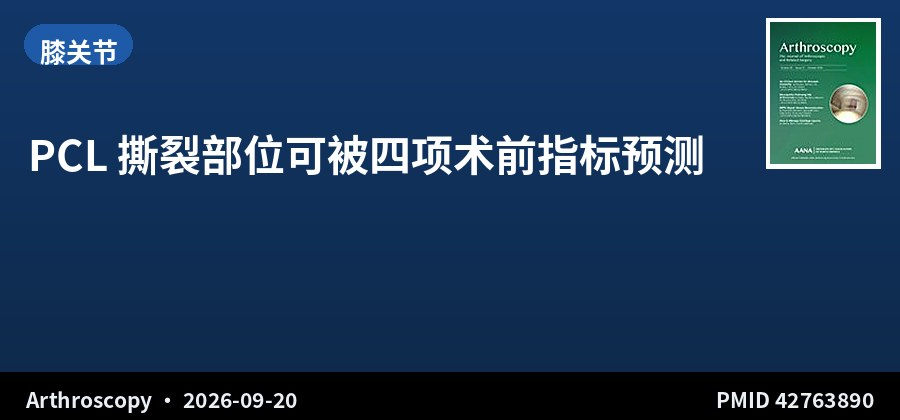
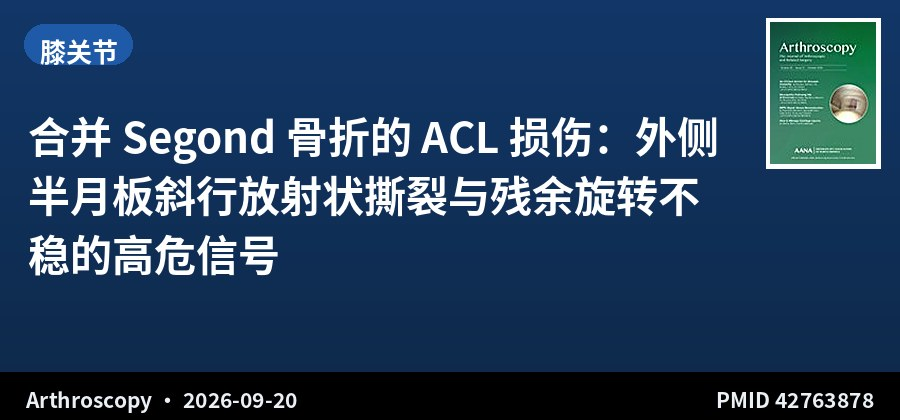
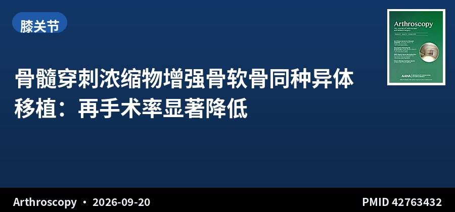
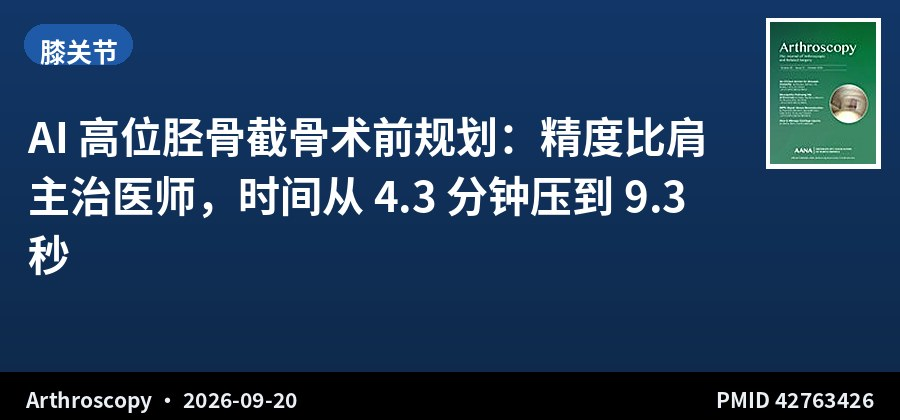
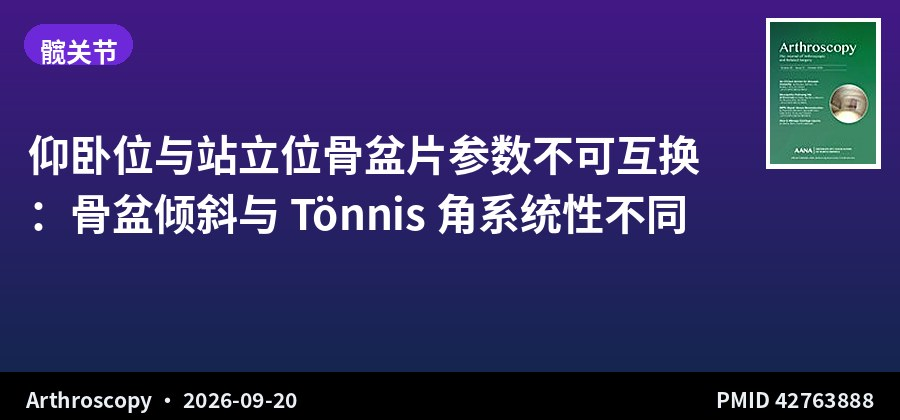
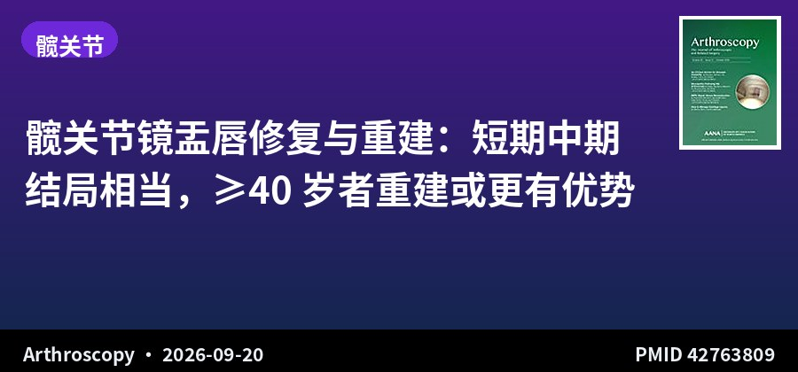
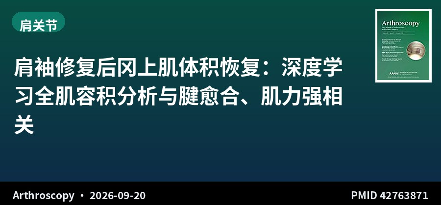
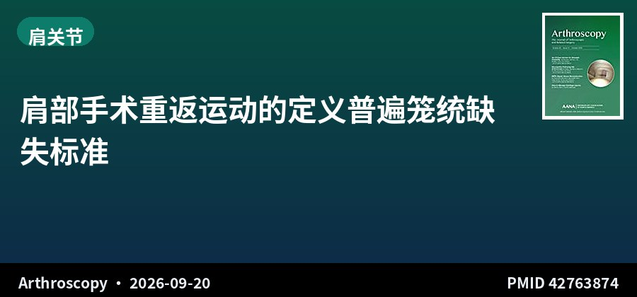
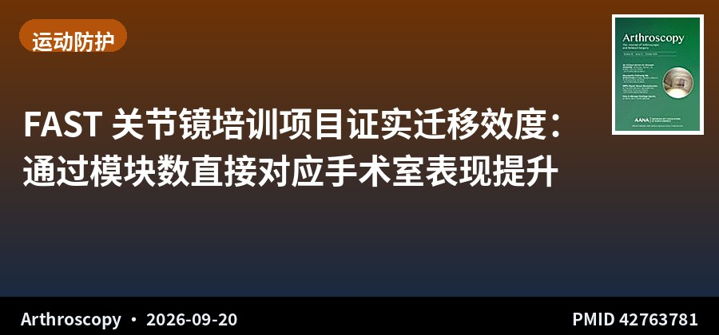

SPORTS MEDICINE & ARTHROSCOPY DIGEST
运动医学 · 关节镜文献速览
第 013 期 · 2026-09-21
9月20日（周日）单日 10 本核心期刊新收录 9 篇（全部采纳）
按部位分类：膝 4 · 髋 2 · 肩 2 · 教育 1 ｜ 含 3 篇系统综述/Meta · 3 篇影像与人工智能 · 1 篇多中心教学研究
编者按 EDITOR'S NOTE
本期覆盖 9 月 20 日（周日）单日收录，10 本核心期刊共检出 9 篇，全部来自 Arthroscopy 且均含完整摘要，无需扩窗，全部采纳。
这一期是典型的「周日特刊」——单一期刊集中上线，反而凑出了一组很整齐的临床命题。膝关节侧两条线索直击「隐匿损伤」：Segond 骨折看似撕脱小骨片，实则提示外侧半月板斜行放射状撕裂（78.7% vs 4.6%）与 2 年后残余旋转不稳（pivot-shift 阳性 50.0% vs 6.1%），是 ACL 重建时容易漏判的伴随损伤；PCL 撕裂部位则可被多韧带损伤、内侧半月板撕裂、过伸型骨挫伤与年轻这四项术前指标显著预测，对制定手术策略有直接价值。髋关节侧一项 12 项研究的 Meta 分析给出务实提醒：仰卧位与站立位骨盆片的骨盆倾斜、Tönnis 角并不等价，LCEA 反而相近——前后位与功能位影像不能混用。
方法学层面，本期有三篇值得作为「工具箱」收录：肩袖修复后冈上肌体积恢复用深度学习分割全肌容积，证明体积增加与腱愈合、肌力恢复强相关；高位胫骨截骨的 AI 术前规划把测量时间从 4.30 分钟压到 9.27 秒而精度与主治医师相当；以及关节镜教学领域的 FAST 课程首次以 O-Score 量化了培训向手术室的迁移效度。
▍膝关节 · 4 篇

回顾性队列 · III级证据 · 148例MRI · κ=0.96
PCL 撕裂部位可被四项术前指标预测
Multiligament Injury, Medial Meniscus Tear, Hyperextension-Type Bone Bruise Pattern, and Younger Age Predict Magnetic Resonance Imaging-Defined Tear Location in Acute, Complete Posterior Cruciate Ligament Injuries
Arthroscopy · 2026-09-20 · 美国特种外科医院（HSS）/ 康奈尔大学 · PMID 42763890
一句话结论：148 例急性完全性 PCL 损伤 MRI（女性 33%，平均 36±16 岁）。按远端残留长度分类：I 型 18.9%、Ib 型 4.1%、II 型 3.4%、III 型 43.2%、IV 型 15.5%、V 型 3.4%、Vb 型 11.5%，观察者间一致性极佳（κ=0.96，95%CI 0.93–0.99，P<.001）。近端撕裂（I/Ib/II 型）的独立预测因素为：多韧带损伤（OR 8.2，95%CI 2.9–26.5，P<.001）、过伸型骨挫伤模式（OR 8.1，95%CI 2.5–28.9，P<.001）、内侧半月板撕裂（OR 6.9，95%CI 2.4–21.6，P<.001）与更低年龄（OR 0.96/岁，P=.001）；中间实质部撕裂（III 型）与上述因素呈反向关联；远端撕裂（IV/V/Vb 型）未发现任何预测因素。
要点：单中心 2008–2023 年回顾性队列，纳入急性完全性 PCL 损伤，排除未断裂的扭伤、部分撕裂及慢性损伤（>60 天）。按完整远端残留相对长度（%）分级——I 型 >90%、Ib 型股骨侧撕脱、II 型 90%–75%、III 型 75%–25%、IV 型 10%–25%、V 型 <10%、Vb 型胫骨侧撕脱。采用单因素与多因素 logistic 回归。
对临床的启示：PCL 撕裂的部位决定了手术方式选择：近端撕脱可考虑修复（尤其带骨块者），实质部撕裂则多需重建，因此术前能预测部位就有实际价值。这项研究给出的四因素组合在常规 MRI 上都能读到，可以直接用于术前判断。两点临床提示：一是女性患者年龄更大、更常为直接撞击伤，切伤类运动损伤比例显著更低，损伤机制存在性别差异；二是远端撕裂目前完全没有预测因素，属于「读片盲区」，术中对胫骨侧残留量需格外留意。

回顾性队列 · III级证据 · 1011膝 · 随访≥2年
合并 Segond 骨折的 ACL 损伤：外侧半月板斜行放射状撕裂与残余旋转不稳的高危信号
Anterior Cruciate Ligament Injuries With Segond Fractures Are Associated With Lateral Meniscus Oblique Radial Tears and Residual Rotational Instability but Not Anatomic Internal Tibial Rotation, Compared With Those Without Segond Fractures
Arthroscopy · 2026-09-20 · 日本群马运动医学研究中心 / 群马大学 · PMID 42763878
一句话结论：1011 膝中 Segond 阳性（S+）47 膝（4.6%）。相比 S- 组，S+ 组胫股旋转角更小（-1.7°±2.5° vs 8.9°±7.7°）、外侧半月板损伤率更高（91.5% vs 36.9%）、外侧半月板斜行放射状撕裂率更高（78.7% vs 4.6%），均 P<.001；术后 pivot-shift 阳性率显著更高（50.0% vs 6.1%，P<.001）。两组翻修率与半月板愈合率相近，患者报告结局均显著改善且组间无差异；Lysholm 与 IKDC 达到 MCID 的比例分别为 64.1% 与 81.6%。Segond 骨折是术后 2 年 pivot-shift 阳性的独立危险因素（OR 13.579，95%CI 6.824–26.970，P<.001）。
要点：2015–2023 年行初次 ACL 重建（双束腘绳肌腱或矩形 BPTB）且随访≥2 年、有二次关节镜检查者。排除合并其他韧带伤（1–2 级内侧副韧带伤除外）、非 Segond 骨折、膝关节手术史、骨骺未闭及晚期骨关节炎。按术前 X 线分为 S+ 与 S- 组，评估 pivot-shift、应力位 X 线前向不稳、MRI 胫股旋转角、Lysholm/Tegner/IKDC 评分及二次镜下半月板撕裂类型与愈合情况。
对临床的启示：Segond 骨折在临床常被当作「附带的撕脱小骨片」而不被重视，这项 1011 膝的队列说明它其实是外侧结构全面损伤的标记：外侧半月板斜行放射状撕裂近乎必然（78.7%），且这类撕裂治疗难度高、易被漏治。pivot-shift 阳性率高达 50% 提示即便做了 ACL 重建，旋转不稳仍可能残留——这支持对 S+ 患者更主动地处理外侧半月板与前外侧结构，而非仅完成韧带重建。注意胫股旋转角在 S+ 组反而更小（外旋），与「旋转更大」的直觉相反，解释时需谨慎，应视为解剖旋转位置的差异而非不稳程度。

系统综述 · III级证据 · 4项研究 · 165膝
骨髓穿刺浓缩物增强骨软骨同种异体移植：再手术率显著降低
Bone Marrow Aspirate Augmentation Reduces Reoperation Rates After Osteochondral Allograft Transplantation of the Knee: A Systematic Review
Arthroscopy · 2026-09-20 · 美国拉什大学医学中心（Rush）/ 朱拉隆功大学 · PMID 42763432
一句话结论：纳入 4 项研究（3 项 III 级、1 项 I 级）、165 膝，平均随访 5.5–18.0 个月。2 项对照研究中，BMA 增强组再手术率显著更低（2.4% vs 21.9%）。影像学结果异质：1 项研究显示 BMA 组 6 个月时整合更早、硬化更少；2 项基于 MRI 的研究未发现 OCA MRI 评分系统（OCAMRISS）差异；1 项 CT 评估发现 BMA 处理移植物小囊肿增多、大囊肿有减少趋势。1 项研究的患者报告结局显示两组 IKDC 与 KOOS-JR 无显著差异，但 KOOS-JR 达到 MCID 的比例倾向 BMA 组（88% vs 55%，P=.076）。
要点：按 PRISMA 2020 指南检索，纳入比较 OCA 联合/不联合 BMA 的对照临床研究。两名评价者独立完成筛选、数据提取与质量评价，随机试验用 Cochrane RoB 2.0、非随机研究用 MINORS。
对临床的启示：再手术率的差异（2.4% vs 21.9%）是本期最醒目的数字之一，但需注意其来源仅为 2 项对照研究、随访期偏短（最短 5.5 个月），因而功能性结局与影像学并未同步显示出优势——MRI 评分无差异、MCID 达标率的 P 值也未过线（.076）。务实解读：BMA 增强可作为低成本、低风险的附加操作，其价值目前主要体现在减少二次手术，而非提升功能评分；对期望值高的患者不宜过度承诺。

AI辅助规划 · 外部验证 · 346膝开发 + 110膝验证
AI 高位胫骨截骨术前规划：精度比肩主治医师，时间从 4.3 分钟压到 9.3 秒
An Artificial Intelligence-Based Preoperative Planning System for High Tibial Osteotomy Significantly Enhances Planning Speed With Comparable Accuracy to Surgeons
Arthroscopy · 2026-09-20 · 山东大学齐鲁医院 / 天津超算中心 / 北京协和医院 · PMID 42763426
一句话结论：开发集 346 膝、外部验证集 110 膝（2 家机构）。OWHTO 辅助规划系统（OAPS）基于 UNet 卷积神经网络检测 28 个解剖标志。测试集平均径向误差 2.703 像素，6 像素阈值检出成功率 0.951；髋-膝-踝角与矫正角的平均绝对误差分别为 0.47°（95%CI 0.39°–0.56°）与 0.43°（95%CI 0.36°–0.51°）。OAPS 与主治医师在所有对线参数上无显著差异（P>.05）；单张影像处理 9.27 秒，显著快于手动规划的 4.30 分钟（P<.001）。外部验证显示住院医师借助 OAPS 可达到主治医师级精度，且显著快于手动与半自动方法。
要点：2023 年 1–12 月回顾性收集膝内翻骨关节炎患者站立位髋-踝全长片。系统用于测量术前对线参数、计算矫正角并可视化结果，分别在主治医师手动测量与 2 家机构外部验证队列中评估精度与效率，比较住院医师使用手动、半自动与 OAPS 辅助三种方式。
对临床的启示：这是本期唯一来自中国的多中心研究，且落点很务实：AI 不追求超越专家，而是「达到专家精度、把时间从分钟级降到秒级」。HKA 与矫正角误差均在 0.5° 以内，已进入临床上可接受的手动测量误差范围。对临床流程的实际意义在于把住院医师的规划质量拉到主治水平，同时减少观察者间变异——这对教学医院和批量规划场景价值明确。局限是回顾性单臂设计、缺乏术后实际矫正度与临床结局的验证，尚不能据此认为能改善手术结果。
▍髋关节 · 2 篇

系统综述+Meta · IV级证据 · 12项研究 · 675例824髋
仰卧位与站立位骨盆片参数不可互换：骨盆倾斜与 Tönnis 角系统性不同
Supine Versus Standing Pelvic Radiographs Yield Significantly Different Radiographic Parameters in Femoroacetabular Impingement and Hip Dysplasia: A Systematic Review and Meta-analysis
Arthroscopy · 2026-09-20 · 美国耶鲁大学 / 威斯康星医学院 / American Hip Institute · PMID 42763888
一句话结论：纳入 12 项研究、675 例患者共 824 髋。单项研究层面，仰卧位与站立位差异出现于骨盆倾斜（10/10 项研究）、Tönnis 角（7/8 项）与 LCEA（6/10 项）。Meta 分析显示仰卧位骨盆倾斜更大——FAI 组 +1.38 cm（95%CI 0.92–1.84，P<.001）、髋发育不良（AD）组 +1.98 cm（95%CI 0.37–3.59，P=.020）；仰卧位 Tönnis 角更小——FAI 组 -1.14°（95%CI -2.19 至 -0.09，P=.030）、AD 组 -1.93°（95%CI -3.20 至 -0.65，P=.003）；LCEA 在两组中均无显著差异（FAI +0.97°，P=.28；AD +1.03°，P=.24）。
要点：研究已在 PROSPERO 注册并按 PRISMA 执行。检索 PubMed、Cochrane CENTRAL 与 Scopus（2025 年 6 月）。纳入比较 FAI 或 AD 患者仰卧位与站立位影像参数的研究，排除无法提取两种体位数据的文献。分析参数包括 LCEA、骨盆倾斜、Tönnis 角、股骨头移位、Sharp 角、关节间隙宽度与 FEAR 指数；对 LCEA、Tönnis 角与骨盆倾斜按 FAI/AD 分层做随机效应 Meta 分析。
对临床的启示：这是一条比看起来更实用的结论：LCEA 这个最常用于判断髋臼覆盖的指标在两种体位下相近，相对稳健；但骨盆倾斜与 Tönnis 角会系统性偏移，意味着拿仰卧片去评估前覆盖或髋臼顶倾斜度可能得出错误结论。临床要点是明确标注每张片的体位，并避免跨体位比较同一患者的随访影像——尤其在本团队关注的 FAI Cam 病灶形态学评估与术前规划中，体位一致性应作为质控项固定下来。局限是所有纳入研究证据级别为 II–IV 级、普遍样本量小，且骨盆倾斜量纲报告方式不一（cm）。

系统综述 · III级证据 · 6项研究 · 2307髋
髋关节镜盂唇修复与重建：短期中期结局相当，≥40 岁者重建或更有优势
Labral Repair and Reconstruction Yield Comparable Patient-Reported Outcomes at Short- to Mid-Term Follow-Up During Primary Hip Arthroscopy: A Systematic Review
Arthroscopy · 2026-09-20 · 美国德州理工大学健康科学中心 / 马里安大学 · PMID 42763809
一句话结论：6 项 III 级研究符合纳入标准（盂唇修复 1628 髋、重建 679 髋）。手术平均年龄：修复组 29.9–48.6 岁、重建组 34.6–48.1 岁；平均随访 2.0–5.8 年。所有研究均显示组内患者报告结局（PROs）显著改善，两组 MCID 与 PASS 达标率均超过 70% 且组间无显著差异。2 项研究示两组术后 PROs 及改善幅度无差异；2 项研究示重建组平均 PRO 改善更大（其中 1 项限于 ≥40 岁患者）；1 项研究示修复组校正后 PROs 更高。4 项研究示翻修率无差异，1 项示修复组全髋置换转换率更低，1 项示 ≥40 岁患者重建组失败率更低。
要点：检索 PubMed、Cochrane Library 与 Embase，按 PRISMA 指南执行。纳入比较初次髋关节镜中盂唇修复与重建的对照临床研究，评估 PROs、翻修性髋关节镜率与全髋置换转换率。
对临床的启示：这项综述替临床上最常纠结的问题给出了一个分层答案：总体上修复与重建结局相当，因此不应把重建当作「升级选项」常规使用；但证据提示两个方向的分化——修复组全髋置换转换率更低（保留自身组织仍有长期价值），而 ≥40 岁患者重建组的失败率更低（退变组织修复难以耐久）。因此决策依据应是年龄与术中组织质量的直接评估，而非偏好。局限是仅 6 项 III 级研究、随访多在 2–5 年，尚不足以下长期结论。
▍肩关节 · 2 篇

回顾性对照 · III级证据 · 102例 · 随访38.9个月
肩袖修复后冈上肌体积恢复：深度学习全肌容积分析与腱愈合、肌力强相关
Postoperative Supraspinatus Muscle Volume Restoration Is Associated With Tendon Healing and Strength Recovery After Rotator Cuff Repair: Deep-Learning-Based Volumetric Analysis of the Entire Muscle With Clinical Correlation
Arthroscopy · 2026-09-20 · 韩国首尔大学医院 / Hallym 大学东滩圣心医院 · PMID 42763871
一句话结论：分析 102 例肩袖修复患者（平均随访 38.9±13.4 个月，范围 24–77）。体积增加组（n=70）相比减少组（n=32）再撕裂率更低（14.3% vs 37.5%，P=.008）、术后 Constant 评分更优（P=.021）、肩胛平面外展（P=.011）与内旋肌力（P=.034）更好。SPV 增加百分比与 Constant 评分提升（r=0.272，P=.008）、肩胛平面外展肌力（r=0.262，P=.014）、内旋肌力（r=0.304，P=.004）显著相关。愈合组（n=80）SPV 平均增加，再撕裂组（n=22）则下降（107.6%±14.7% vs 94.1%±19.8%，P=.006）。每增加 10% 的术后 SPV 独立关联更高的 Constant 评分（P=.049）、肩胛平面外展肌力（P=.018）、内旋肌力（P=.008）与更低的再撕裂风险（OR 0.49，95%CI 0.30–0.80，P=.004）。
要点：回顾性分析随访≥2 年且术前与术后 1 年 MRI 均完整覆盖冈上肌至内侧起点的肩袖修复患者。采用深度学习模型自动分割冈上肌并计算体积（SPV），按体积变化、腱愈合与性别分组比较，并与影像学与临床参数做相关分析。
对临床的启示：过去的肌肉评估多依赖 Goutallier 分级或切线指数这类定性/半定量指标，本研究用全肌自动分割把「肌肉质量」变成了连续可量化的变量，并证明其与腱愈合和肌力恢复强相关——每 10% 体积恢复对应再撕裂风险下降约一半，这个剂量-效应关系对术前谈话很有说服力。临床意义在于：术后 1 年 MRI 若见冈上肌体积未恢复，本身就是再撕裂的预警信号，可据此加强随访或调整康复强度。局限是单中心回顾性、样本 102 例，且自动分割依赖完整覆盖的 MRI 序列，推广时需评估影像质控条件。

系统综述 · IV级证据 · 130项研究 · 6983例
肩部手术重返运动的定义普遍笼统缺失标准
Definitions of Return to Play After Shoulder Surgery in Competitive Athletes Are Nonspecific and Unstandardized: A Systematic Review
Arthroscopy · 2026-09-20 · 美国佐治亚医学院 / 杜克大学 · PMID 42763874
一句话结论：纳入 130 项研究、6983 例患者。重返运动（RTP）定义被评为「完整」者仅 27.7%，部分定义 51.5%，最小定义 20.8%。单一运动项目研究报告完整定义的比例高于多项目研究（39.5% vs 10.9%，P=.003）。仅 15.4% 的研究明确界定了「成功重返运动」。最常见定义为「回到伤前水平运动」（n=46，35.4%），最常见的完整定义为「在伤前水平至少参加 1 场比赛」。时间是最常被引用的放行标准（n=67，51.5%），且在 34 项研究（26.2%）中是唯一标准。74.6% 的研究证据级别为 IV 级。
要点：按 PRISMA 指南检索 MEDLINE、Embase 与 Cochrane Library。纳入报告竞技运动员肩部手术后 RTP 的研究。定义分为完整（同时含伤前竞技水平与客观参赛阈值）、部分（含其一）与最小（两者皆无、仅用「重返运动」等模糊表述）；同时记录 RTP 报告术语与放行标准。
对临床的启示：RTP 是肩关节运动损伤文献里被引用最多、却定义最混乱的指标之一。四分之三的研究证据级别为 IV 级、超过半数把「时间到了」当作唯一放行依据，说明目前多数结论只能作为参考而非决策依据。对我们实际工作的启示是双向的：读文献时不能只看 RTP 率数字，必须追问其定义与放行标准；写自己的研究时则应采用完整定义（伤前竞技水平 + 客观参赛阈值 + 明确时间窗），这本身就是提高稿件质量的抓手。
▍运动防护 · 1 篇

多中心教学研究 · 34名住院医师 · 7个培训基地
FAST 关节镜培训项目证实迁移效度：通过模块数直接对应手术室表现提升
Fundamentals of Arthroscopic Surgery Training Program Shows Transfer Validity Through Enhanced Operative Arthroscopic Performance
Arthroscopy · 2026-09-20 · 美国罗切斯特大学 / 杜克大学 / 拉什大学等 7 家机构 · PMID 42763781
一句话结论：34 名（100%）PGY1-3 骨科住院医师完成 2 天 FAST 培训与技能评估课程。100% 住院医师与带教教师认同 FAST 培训提升了关节镜技能（内容效度）；专家-新手对比在 6 个模块中的 5 个显示显著差异（结构效度）。培训后除迷宫模块外所有模块通过率均提高。每通过一个 FAST 模块，对应尸体模拟关节镜 ASSET 评分提高 1.24 分（P<.001）并改善 VirtaMed 膝/肩模拟器指标（并发效度）；对应手术室中 ASSET 评分（0–33 分）提高 3.86 分、ABOS O-Score（8–40 分）提高 4.52 分、ABOS 术式专用工具 P-Tool（1–5 分）提高 1.29 分，均 P<.001（迁移效度）。
要点：参与者为来自 7 个培训项目的 PGY1-3 骨科住院医师，2020 年 2 月在骨科学习中心完成为期 2 天的 FAST 培训与外科技能评估课程。培训前后在手术室进行技能评估以确定基线并测量迁移效度，手术表现以 ASSET、ABOS O-Score 与 P-Tool 三项工具评估，并分析内容、结构、并发与迁移四类效度。
对临床的启示：模拟培训的价值过去多停留在「练得更熟」，这项研究的贡献在于用 ABOS O-Score 这一权威手术室评估工具量化了迁移——每通过一个模块对应 O-Score 提升 4.52 分（量表跨度 8–40 分），量级可观，且是剂量-效应关系。对教学医院的意义是：FAST 可作为一个有客观考核终点、可通过率计量的标准化入门课程，把「是否掌握基本关节镜操作」从主观印象变成可记录的数据。局限是单臂前后对照、34 名学员、缺乏随机与长期随访，无法排除练习效应与自然成长曲线。
关于本栏目：每日定时检索 AJSM、Arthroscopy、Arthroscopy Techniques、KSSTA、Sports Health、OJSM、J ISAKOS、Sports Medicine、Foot & Ankle International、JSES 共 10 本运动医学核心期刊前一日新收录文献，按关节分类，AI 辅助生成中文精要。
声明：本内容由 AI 辅助整理，仅供学术交流参考，观点与数据请以原文为准，不构成诊疗建议。文献题录与摘要来源：PubMed。
— 运动医学 · 关节镜文献速览 · 第 013 期 —